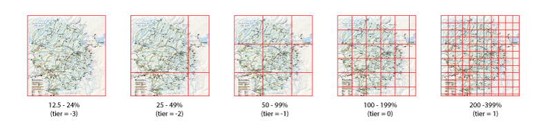
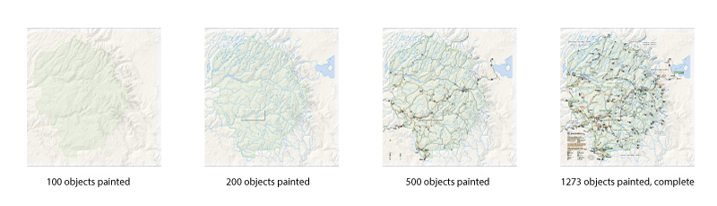
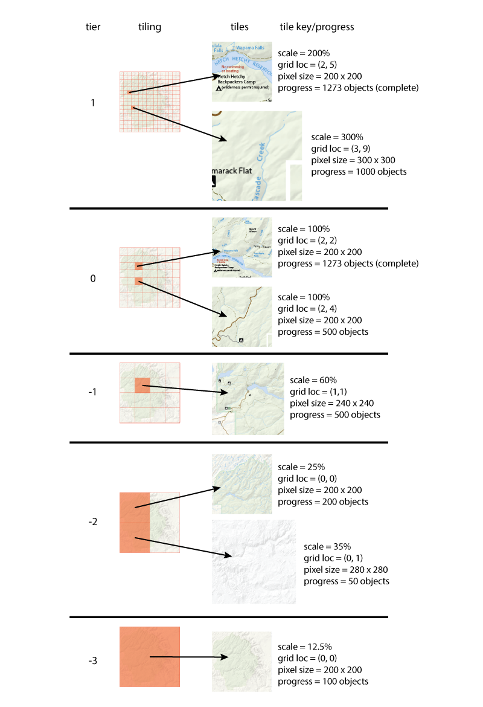
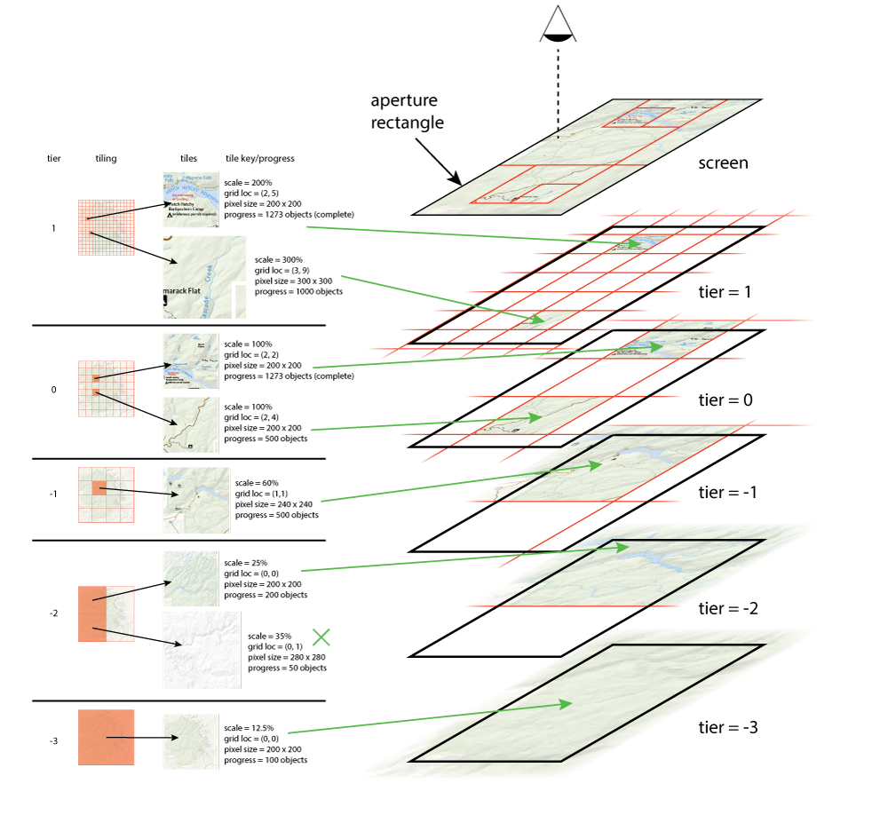
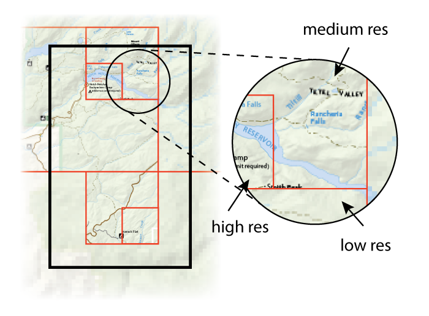

Tile Cache¶
Reference: https://wiki.corp.adobe.com/display/t4/T4+Tile+Cache
The T4 pdf_tile_cache class is provided to support rendering of PDF in interactive environments in which scrolling and zooming to arbitrary positions and levels occurs. Rendering occurs in background threads into offscreen tiles. Display to the screen is performed by selecting tiles that best match the current view parameters and displaying them, scaling the tiles if necessary.
Tiles are progressively rendered; if artwork is complicated and takes a long time to render the pdf_tile_cache will display partially rendered tiles.
At a very high level, a client interacts with the pdf_tile_cache in two ways:
Instructing the pdf_tile_cache what to work on. In a typical viewing application, the user’s view of the page can be represented by a page number, zoom level and a clip rectangle corresponding to the window’s aperture. These three parameters describe what the client presumably would like the pdf_tile_cache to produce as a top priority. In addition to this, the client might also want thumbnails of all the pages, and it might also anticipate wanting renderings of other pages using cache-ahead strategies.
Using the current contents of the pdf_tile_cache. Internally, the pdf_tile_cache contains many tiles, all of which represent some subset of the page rendered at some zoom level. Any of these tiles may be only partially finished rendering. The client provides a page number/zoom level/clip rectangle tuple to the tile cache and asks that it locate the subset of cached tiles which will give the best possible rendering based on the cache’s current contents. This is accomplished by calling pdf_tile_cache::pile_tiles.
The pdf_tile_cache is fundamentally asynchronous; all pdf_tile_cache methods return very quickly. Most importantly, enumerating the contents of the pdf_tile_cache (as described in step 2) is fast enough that one should be able to call the pile_tiles() member function once per frame and sustain a reasonable frame rate during a GUI animation such as a pan or a zoom.
The Basics¶
Creating a pdf_tile_cache¶
To create a T4 tile cache, use the t4::pdf::pdf_tile_cache class template. You must provide an instance of a class that models the “PDF Tile Cache Client” concept. Here is an example of such a client:
using namespace t4::pdf;
class my_bitmap_type
{
... implementation ...
};
class my_ptc_client
{
friend my_bitmap_type make_bitmap( my_ptc_client const& ths, t4::int_point const& sz, void const* pixels, size_t scan_line_stride );
friend auto get_resource_pools( my_ptc_client const& ths );
};
Note that my_ptc_client is not a class derived from some abstract base class. Furthermore, the client gets to specify certain important types, such as the bitmap type used to store tiles of data in the tile cache. The type of the client is used as a template argument to the pdf_tile_cache object that gets created. Although it doesn’t in this example, the client may contain state.
Please see the Bitmaps section for details on the appropriate implementation of make_bitmap and get_resource_pools.
Once you have an instance of your client class, you can construct a pdf_tile_cache:
/*
To create a pdf_tile_cache, you must provide:
1) an instance of a class that models "PDF Tile Cache Client"
2) a shared pointer to a document
3) a list of one or more "requesters" whose job is to describe what the pdf_tile_cache
should be working on at any given time
*/
std::shared_ptr<document> doc = load_document("foo.pdf");
// These objects implement the pdf_tile_cache_requester interface, in different ways
auto pageview_requester = t4::make_shared<pdf_tile_cache_page_view_requester<my_ptc_traits>>();
auto thumbnail_requester = t4::make_shared<pdf_tile_cache_thumbnail_requester<my_ptc_traits>>();
my_ptc_client client;
pdf_tile_cache<my_ptc_client> my_tile_cache(doc, {pageview_requester, thumbnail_requester}, client);
Controlling a pdf_tile_cache¶
To control a T4 tile cache, hang on to the two “requester” variables you used in constructing the pdf_tile_cache:
using namespace t4;
// Inform the cache that the bottom half of page 0 is visible at 100% zoom
pageview_requester->set_page_visible(0, draw_params(1.0), make<int_rect>(0, 396, 612, 792));
// And the top half of page 1 is visible at 150% zoom
pageview_requester->set_page_visible(1, draw_params(1.5), make<int_rect>(0, 0, 918, 594));
// This is how you would say "page 2 is no longer visible." (Although pages are "invisible" by default)
pageview_requester->set_page_invisible(2);
// Tell the thumbnail requester that you'd like thumbnails (compact but low-resolution versions of the entire page) of
// 20 pages in the neighborhood of page 10. Thumbnail requests are always lower priority than page view requests.
thumbnail_requester->set_important_page(10, 20);
The requesters tell what the pdf_tile_cache needs to work on whenever one of its worker threads is idle.
It is important that you choose carefully the times you call these methods. The purpose of pageview_requester is to manage an aperture into a scrolling galley of pages; the client’s job is to figure out which subrectangles of which pages are visible and what scale to render them at, and then make the appropriate calls to set_page_visible (to describe which pages need to be drawn) and set_page_invisible (to identify pages that have scrolled out of view). The pdf_tile_cache uses this information to decide which tiles to paint on background threads.
If you call these methods at high frequency, e.g., every animation frame during a flick or a pinch, the pdf_tile_cache will thrash, constantly halting and re-starting the rendering with slightly different parameters. You should instead call these routines whenever the GUI has “settled,” i.e., the user has completed a touch gesture, or a scroll animation has come to a full stop (or, better still, when you know where a scroll animation will come to a full stop). A good GUI framework will make it easy to identify these times. You can call these methods from any thread, but we expect them to be called mainly from the GUI thread.
Displaying a pdf_tile_cache’s Contents¶
At some point, of course, your code is going to need to display PDF content on the screen. pdf_tile_cache contains a method called pile_tiles which takes the following inputs:
The page to be painted
The current display scale
The current aperture, in page device space (i.e., in pixels, with the origin at the top left corner of the page)
A callable that takes a bitmap and a rectangle in page device space, and presumably paints the bitmap stretched to fit that rectangle.
pile_tiles takes these parameters and calls back the provided callable zero or more times. The idea is that if the client paints the specified bitmaps at the specified locations, with later bitmaps obscuring earlier ones, the user will see the best possible rendering of the page’s contents based on the current contents of the cache. It is possible that pile_tiles will leave some pixels uncovered; the client should make sure that in this case the appropriate backdrop color (typically white) appears there.
pile_tiles is supposed to be blazing fast. We expect that clients will call it at “frame-rate” frequencies. All it does is walk the cache and call the callable several times (and this implies, of course, that the callable provided by the caller must also be extremely fast). It does not do any actual PDF rasterization itself. Nor will it use the requested parameters to decide what to work on next. The client has explicit control over that using the registered pdf_tile_cache_requester list.
Example Call to pdf_tile_cache::pile_tiles
using namespace t4::pdf;
class my_view
{
document m_document;
pdf_tile_cache<my_ptc_client> m_tile_cache;
tile_collection m_currently_displayed_collection;
public:
... various ctors, etc. ...
void paint_page(size_t page_num, real scale, int_rect const& aperture)
{
auto my_graphics_context = get_graphics_context();
// Create a lambda that places bitmaps at locations specified by pile_tiles
auto bitmap_placer = [this, my_graphics_context&](my_bitmap_type const& bitmap, int_rect const& where)
{
my_graphics_context.paint_bitmap(bitmap, where);
};
// pile_tiles walks the list of cached tiles, and produces the best possible
// rendering for the requested aperture and scale. See below for an explanation
// of the tile_collection class.
m_currently_displayed_collection = m_tile_cache.pile_tiles(page_num, draw_params(scale), aperture, bitmap_placer);
}
};
pdf_tile_cache Details¶
Tile Cache Requesters¶
An instance of pdf_tile_cache manages one or more background threads on which rasterization of PDF occurs. One or more instances of pdf_tile_cache_requester are attached to a pdf_tile_cache (see the constructor, above). A pdf_tile_cache_requester’s job is to produce instances of paint_request for the pdf_tile_cache whenever it needs to figure out what to paint on the background thread. A paint_request is built out of the following pieces of information:
A page number
A two-dimensional scale
An integral rectangle describing the clip bounds in device space
A priority value (just an integer)
Internally, whenever a worker thread completes a task, it walks all of the attached pdf_tile_cache_requesters and asks each of them for their highest-priority paint_request. The thread then works on the highest priority of those.
Clients shouldn’t have to worry about implementing a pdf_tile_cache_requester; we provide two implementations of the interface which cover the most important cases. You can see them instantiated above.
Bitmaps¶
pdf_tile_cache doesn’t provide a bitmap type. Instead, clients must provide their own. Instances of this bitmap type are used to store pixel data provided to it by the pdf_tile_cache. The client-implemented bitmap type must have the following properties:
It must be a regular type
The copy constructor must be “fast,” i.e., a copy of a bitmap shouldn’t involve copying all the pixel data contained therein
iOS’s CGImageRef almost satisfies these constraints by itself, except that it’s just a raw pointer and to guarantee lifetime you’ll need to wrap it in a C++ class that bumps the retain count. t4::cfref is a good solution to this problem. On platforms where the native image type isn’t copyable wrapping it up in a shared_ptr will help you satisfy the above constraints, as the below example will demonstrate.
Defining the Bitmap Type¶
Consider the following hypothetical class:
class my_bitmap
{
t4::unique_ptr<char[]> m_pixel_data;
t4::int_point m_size;
public:
// Construct a bitmap from the provided pixel data
my_bitmap(t4::int_point const& size, void const* pixel_data, size_t scan_line_stride);
};
Note that my_bitmap as defined above does not satisfy the criteria of a bitmap type–it is not copyable due to the unique_ptr member variable, and even if one wrote a copy constructor that copied all the pixel data, that copy would be unacceptably slow. But we can easily resolve this by returning a shared_ptr to my_bitmap.
The return type of make_bitmap determines the parameter type in other pdf_tile_cache API’s, for example, pile_tiles.
std::shared_ptr<my_bitmap> my_ptc_client::make_bitmap(my_ptc_client const& ths, t4::int_point const& sz,
void const* pixels, size_t scan_line_stride)
{
return t4::make_shared<my_bitmap>(sz, pixels, scan_line_stride);
}
make_bitmap must consume all the data before returning to the caller–after the call returns the pdf_tile_cache might delete or overwrite the buffer pointed to by pixel_data.
Drawing Parameters¶
struct draw_params
{
real_point m_scale;
};
The draw_params data structure describes parameters for a specific rendering. At the moment the only member is the m_scale parameter, but when we expand tile_cache to support reflow we’ll add a optional<reflow_key> member. Support for non-rotating entities (like certain annotations) may compel us to add a member of type orthogonal_rotation.
To the pdf_tile_cache, a scale is expressed as a real_point_type. This is the device scale and is two-dimensional in order to support devices with non-square pixels. As a simplification, the rest of this document is written as if get_x(m_scale) and get_y(m_scale) are the same value, called “the scale.”
Tile Collections¶
Instances of tile_collection (strictly speaking, pdf_tile_cache<my_ptc_traits>::tile_collection) are used to solve a couple of problems: 1) When calling pdf_tile_cache_pageview_requester::set_page_visible, we are presumably describing the precise rendering that we’d like the user to see as soon as possible. This corresponds to a set of precisely-specified tile keys all belonging to the same tier. During the rendering we can presume that the pdf_tile_cache will keep those tiles from being purged. But once the rendering completes, how can we insure that those tiles won’t be purged the next time there’s a memory crunch?
It is expected that a client will call pile_tiles in response to some sort of OS-specific screen-refresh callback. The screen’s contents were derived from an earlier call to pile_tiles, and used tiles which may have been purged since then. It’s possible that some of those purged tiles are “better” (typically, more complete) than those produced by the second call to pile_tiles. How do we guarantee that this second call to pile_tiles doesn’t produce a degraded rendering?
The tile_collection object is an opaque class whose instances, under the hood, simply assert reference counts on sets of tiles. When you call set_page_visible, the set of tiles that perfectly represent the requested parameters are created, and smart pointers to them are stored in the returned tile_collection. As long as the pdf_tile_cache_pageview_requester hangs on to that tile_collection, those tiles cannot be destroyed, even after the rendering completes. The only way to get a pdf_tile_cache_pageview_requester to “release” these tiles is to call set_page_invisible or set_page_visible with a different set of draw parameters.
In the second case, pdf_tile_cache::pile_tiles returns a tile_collection holding a reference count on every tile that was used in the enumeration. By keeping the tile_collection alive until after the next call to pile_tiles, we insure that the second painting will be at least as good as the first one. After that second call completes, we can throw away the first tile_collection and save the new one.
Please see the m_currently_displayed_collection member variable in the “Example Call to pdf_tile_cache::pile_tiles ,” above.
pdf_tile_cache Implementation and Theory¶
Fundamental to the pdf_tile_cache is the notion of page tiling. A given zoom level describes a specific subdivision, or tiling, of the page in user space. Except for the tiles at the right and bottom edge of the page, the tiles are square, with each side measuring (in default user space):
minimum_tile_size / 2floor(log2scale) <TODO – fix this>
minimum_tile_size is a parameter passed to pdf_tile_cache’s constructor. It defaults to 200. The size of a tile at a given scale is given by simply multiplying the above expression by the scale:
scale * minimum_tile_size / 2floor(log2scale) <TODO – fix this>
This value is truncated for tiles on the right and bottom edge of the rendering, as seen in the below diagram. Note that as a result of the floor() expression, any two scale values in the half-open interval [ 2 n, 2 n+1 ) (for integral n) will have identical tilings. These tilings are identified by their tier which is given by the corresponding integral n:
Some other interesting consequences of this design:
All tilings produce tiles with 200-399 (by default) pixels on a side, which insures that tiles are always a manageable size.
All tiles with the same tier and grid location in that tier span the same rectangle of the page’s content. This makes it very easy, for example, to paint an approximation of a rendering at 75% using tiles that were painted at 80%. All four edges of those two tiles are coincident when mapped to default page space.
Tiles in consecutive tiers have coincident edges. A tile in tier n can be painted using four tiles from tier n+1, or one quadrant of a tile from tier n-1.
pdf_tile_cache State¶
The pdf_tile_cache is, as the name implies, a cache of Tiles. Tiles are identified and retrieved by their tile key. The tile key is not a public data structure, but it encapsulates the following information:
page number
tier
draw_params
(col, row) of the tile in the tiling corresponding to the tier
Note
For the rest of this document we’ll pretend that m_scale is the only member of draw_params, and that m_scale is one-dimensional. It is straightforward to extend the model described here to use the additional parameters.
Tiles are reference counted, and may be purged if their reference count drops to 1 and memory is low.
All tile keys belong to a tier, which is computed directly from the scale value in draw_params, using the formula noted above. The grid location is expressed in the tiling implied by that tier.
Each Tile, retrieved by the cache using the tile key, contains the following: * A bitmap, containing pixel data in whatever form is most convenient to the client (we recommend using a native image type which can store its data on the GPU, like CGImage on iOS) * A painting progress value which is simply an integer indicating how much of the page’s contents are present in the RasterSurface.
About Painting Progress¶
A single page of PDF can have thousands of objects on it, and even if they don’t overlap the have a strict z-order implied by their order in the content stream. The pdf_tile_cache paints page content into a private buffer whose contents span one or more tiles arranged in a rectangular grid and periodically – at intervals of ~500 msec (also configurable) – flushes the contents of this buffer into the corresponding tiles.
Every time the pdf_tile_cache performs a flush it knows precisely how many of the objects in the page it has painted into its private buffer. This number is the rendering’s current “painting progress” value; it monotonically increases until the rendering completes. The pdf_tile_cache iterates through the tiles spanned by the current rendering, which is always aligned to tile boundaries. If a tile’s painting progress value is less than the rendering’s painting progress, then the private rendering buffer’s contents are flushed to that tile, and that tile’s painting progress value is updated. Otherwise the tile is untouched.
It is vital to remember that the painting progress is a part of the tile’s value, not its key: whenever you request a tile you’ll get back an object with a painting progress value and a bitmap with content painted up to that point.
At any given point in time the pdf_tile_cache has zero or more painting threads running, periodically flushing their progress into the corresponding tiles. In response to requests from the client, these threads will frequently be terminated before they have the chance to complete, and new threads will be started painting into a different set of tiles. As a result after a long sequence of calls the pdf_tile_cache will contain many tiles, some of which are incomplete and some of which are complete. Among the incomplete ones, some are being actively updated by a draw thread, and others are not. Tiles are aged out of the cache LRU-style, to insure that total memory consumption never grows out of control.
The following diagram shows a possible state of the tile cache. In this diagram, the cache has 8 entries.
pile_tiles Implementation¶
The pile_tiles method, described above, is the only way to access the pdf_tile_cache contents. pile_tiles takes a draw_params and a clip rectangle, and enumerates an ordered list of tiles which provide a “best possible” rendering within that clip.
A “best possible” rendering will attempt to cover every pixel of the target clip with the “best” tile for that pixel. The pdf_tile_cache will prefer tiles with higher progress numbers. If two tiles have the same progress number (e.g., they’re both complete) it will prefer the tile with the scale closer to the requested scale.
This method is called pile_tiles because it does exactly that: pile tiles on top of each other until the aperture is covered. This piling progresses from low-valued tiers to high-valued tiers, so that higher-resolution tiles obscure lower-resolution tiles (unless the progress number is lower).
There is a cut-off such that the tile cache will not retrieve tiles more than 3 tiers below the tier derived from the draw_params. This heuristic is in place because such downscales have such a high source-to-destination pixel ratio that they’re often simply not worth the expense of rendering them.
This diagram demonstrates how the pdf_tile_cache in exactly that state would select which tiles to display in a given aperture:
The tile in tier -2 that isn’t used is skipped because, if it were placed, it would obscure the tile from tier -3. That would be bad because the tier -2 tile has only rendered up to object 50, and the tier -3 tile has painted 100 objects.
The end result looks like this:
